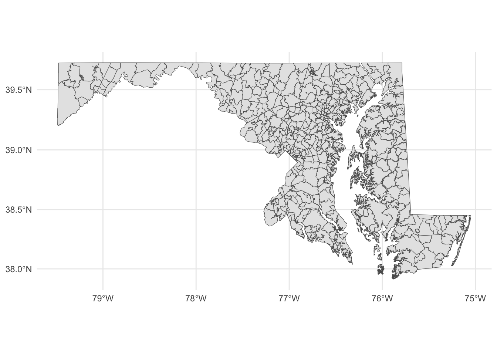
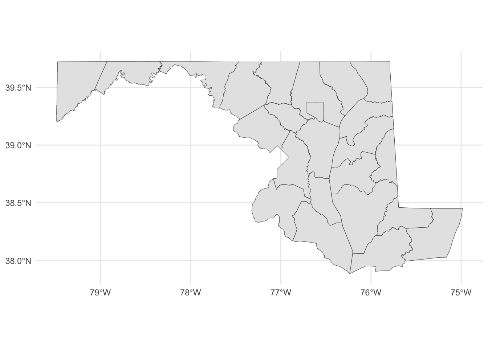
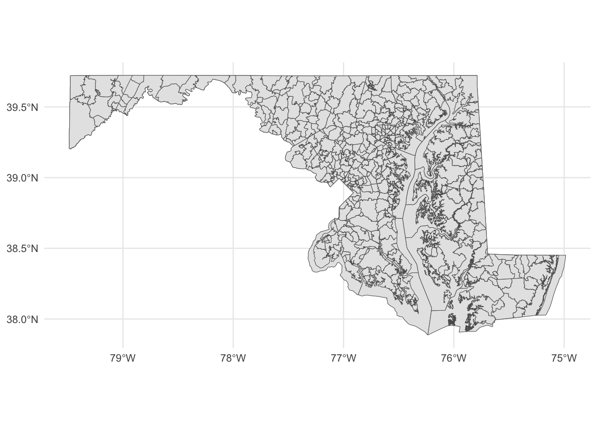
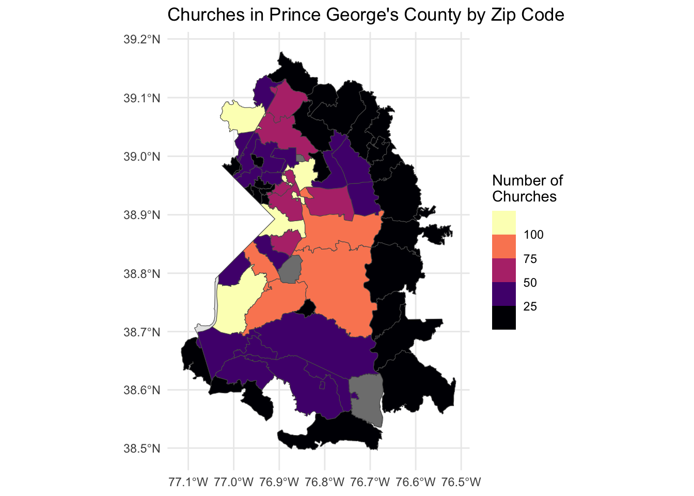

Geographic data basics
Up to now, we’ve been looking at patterns in data for what is more than this, or what’s the middle look like. We’ve calculated metrics like percentages, or looked at how data changes over time.
Another way we can look at the data is geographically. Is there a spatial pattern to our data? Can we learn anything by using distance as a metric? What if we merge non-geographic data into geographic data?
The bad news is that there isn’t a One Library To Rule Them All when it comes to geo queries in R. But there’s one emerging, called Simple Features, that is very good.
Go to the console and install it with install.packages("sf")
To understand geographic queries, you have to get a few things in your head first:
- Your query is using planar space. Usually that’s some kind of projection of the world. If you’re lucky, your data is projected, and the software will handle projection differences under the hood without you knowing anything about it.
- Projections are cartographers making opinionated decisions about what the world should look like when you take a spheroid – the earth isn’t perfectly round – and flatten it. Believe it or not, every state in the US has their own geographic projection. There’s dozens upon dozens of them.
- Geographic queries work in layers. In most geographic applications, you’ll have multiple layers. You’ll have a boundary file, and a river file, and a road file, and a flood file and combined together they make the map. But you have to think in layers.
- See 1. With layers, they’re all joined together by the planar space. So you don’t need to join one to the other like we did earlier – the space has done that. So you can query how many X are within the boundaries on layer Y. And it’s the plane that holds them together.
Importing and viewing data
Let’s start with the absolute basics of geographic data: loading and viewing. Load libraries as usual.
library(tidyverse)
library(sf)
library(janitor)First: an aside on geographic data. There are many formats for geographic data, but data type you’ll see the most is called the shapefile. It comes from a company named ERSI, which created the most widely used GIS software in the world. For years, they were the only game in town, really, and the shapefile became ubiquitous, especially so in government and utilities.
More often than not, you’ll be dealing with a shapefile. But a shapefile isn’t just a single file – it’s a collection of files that combined make up all the data that allow you to use it. There’s a .shp file – that’s the main file that pulls it all together – but it’s important to note if your shapefiles has a .prj file, which indicates that the projection is specified. You also might be working with a GeoDatabase, or a .gdb file. That’s a slightly different, more compact version of a Shapefile.
The data we’re going to be working with is a Shapefile of Maryland zip codes from the state’s GIS data catalog.
Similar to readr, the sf library has functions to read geographic data. In this case, we’re going to use st_read to read in our zip code data. And then glimpse it to look at the columns.
md_zips <- st_read("data/md_zips/BNDY_ZIPCodes11Digit_MDP.shp")Reading layer `BNDY_ZIPCodes11Digit_MDP' from data source
`/Users/dwillis/code/datajournalismbook-religion/data/md_zips/BNDY_ZIPCodes11Digit_MDP.shp'
using driver `ESRI Shapefile'
Simple feature collection with 526 features and 7 fields
Geometry type: MULTIPOLYGON
Dimension: XY
Bounding box: xmin: -8848487 ymin: 4567000 xmax: -8354398 ymax: 4825836
Projected CRS: WGS 84 / Pseudo-Mercatorglimpse(md_zips)Rows: 526
Columns: 8
$ OBJECTID <int> 1, 2, 3, 4, 5, 6, 7, 8, 9, 10, 11, 12, 13, 14, 15, 16, 17, …
$ ZIPCODE2 <chr> "02400121502", "02400121521", "02400121530", "02400121532",…
$ ZIPNAME <chr> "Cumberland", "Barton", "Flintstone", "Frostburg", "Lonacon…
$ EXISTING <chr> "MDPV2017_18", "MDPV2017_18", "MDPV2017_18", "MDPV2017_18",…
$ ZIPCODE1 <chr> "21502", "21521", "21530", "21532", "21539", "21540", "2154…
$ Shape_Leng <dbl> 161775.468, 29199.174, 93603.136, 58275.951, 35065.607, 397…
$ Shape_Area <dbl> 441770403, 38842463, 267606761, 188918096, 65669461, 108639…
$ geometry <MULTIPOLYGON [m]> MULTIPOLYGON (((-8755679 48..., MULTIPOLYGON (…This looks like a normal dataframe, and mostly it is. We have one row per zipcode, and each column is some feature of that zip code: the fipscode, name and more. What sets this data apart from other dataframes we’ve used is the last column, “geometry”, which is of a new data type. It’s not a character or a number, it’s a “Multipolygon”, which is composed of multiple longitude and latitude values. When we plot these on a grid of latitude and longitude, it will draw those shapes on a map.
Let’s look at these zip codes We have 526 of them, according to this data.
But where in Maryland are these places? We can simply plot them on a longitude-latitude grid using ggplot and geom_sf.
md_zips |>
ggplot() +
geom_sf() +
theme_minimal()
Each shape is a zip code, with the boundaries plotted according to its degrees of longitude and latitude.
If you know anything about Maryland, you can pick out the geographic context here. You can basically see where Baltimore is and where the borders of the District of Columbia touch Maryland. But this map is not exactly ideal. It would help to have a county map layered underneath of it, to help make sense of the spatial nature of this data.
This is where layering becomes more clear. First, we want to go out and get another shapefile, this one showing Maryland county outlines.
Instead of loading it from our local machine, like we did above, we’re going to use a package to directly download it from the U.S. Census. The package is called tigris and it’s developed by the same person who made tidycensus.
In the console, install tigris with install.packages('tigris')
Then load it:
library(tigris)To enable caching of data, set `options(tigris_use_cache = TRUE)`
in your R script or .Rprofile.Now, let’s use the counties() function from tigris to pull down a shapefile of all U.S. counties.
counties <- counties()
glimpse(counties)This looks pretty similar to our zip codes shapefile, in that it looked mostly like a normal dataframe with the exception of the new geometry column (this time called geometry, which is pretty common).
This county shapefile has all 3233 U.S. counties. We only want the Maryland counties, so we’re going to filter the data to only keep Maryland counties. There is no STATE column, but there is a STATEFP column, with each number representing a state. Maryland’s FP number is 24.
md_counties <- counties |>
filter(STATEFP == "24")To see what this looks like, let’s plot it out with ggplot. We can pretty clearly see the shapes of Maryland counties.
md_counties |>
ggplot() +
geom_sf() +
theme_minimal()
With this county map, we can layer our places data.
Something to note: The layers are rendered in the order they appear. So the first geom_sf is rendered first. The second geom_sf is rendered ON TOP OF the first one.
We’re also going to change things up a bit to put the datasets we want to display INSIDE of the geom_sf() function, instead of starting with a dataframe. We have two to plot now, so it’s easier this way.
ggplot() +
geom_sf(data=md_counties) +
geom_sf(data=md_zips) +
theme_minimal()
Notice the subtle differences at the boundaries?
Now let’s do something more interesting with geographic data. We’re going to figure out which churches from our statewide churches data are located in Prince George’s County – and then map them. But our churches data doesn’t have a county column. It only has zip codes. So how do we figure out which zip codes are in Prince George’s County?
This is where the power of geographic data comes in. We already have a zip code shapefile with the geographic boundaries of each zip code, and we can get the geographic boundary of Prince George’s County from our county data. Using a spatial join, we can find which zip codes overlap with Prince George’s County – no county column needed. The geography itself connects the two datasets.
First, let’s load the Maryland churches data. This is a dataframe of churches registered as tax-exempt organizations in Maryland. It has columns for the church name, address, city, state, zip code, and NTEE code (a classification system for nonprofits). Notice the zip5 column – that’s the 5-digit zip code we can use to connect this data to our zip code shapefile.
md_churches <- read_csv("data/churches_md.csv")Rows: 7314 Columns: 29
── Column specification ────────────────────────────────────────────────────────
Delimiter: ","
chr (16): EIN, NAME, ICO, STREET, CITY, STATE, ZIP, GROUP, SUBSECTION, RULIN...
dbl (13): AFFILIATION, CLASSIFICATION, DEDUCTIBILITY, FOUNDATION, ORGANIZATI...
ℹ Use `spec()` to retrieve the full column specification for this data.
ℹ Specify the column types or set `show_col_types = FALSE` to quiet this message.glimpse(md_churches)Rows: 7,314
Columns: 29
$ EIN <chr> "010060379", "010549919", "010549978", "010552565", "…
$ NAME <chr> "HEALING AND DELIVERANCE MINISTRY INC", "TIME OF GRAC…
$ ICO <chr> NA, "% MIGUEL A ROMERO", "% CARNAL BRADLEY PASTOR", N…
$ STREET <chr> "14103 BYRNE PARK DR", "501 ROSEMERE AVE", "5611 LANI…
$ CITY <chr> "CLARKSBURG", "SILVER SPRING", "SUITLAND", "CROWNSVIL…
$ STATE <chr> "MD", "MD", "MD", "MD", "MD", "MD", "MD", "MD", "MD",…
$ ZIP <chr> "20871-6337", "20904-3020", "20746-6216", "21032-0797…
$ GROUP <chr> "0000", "0000", "0000", "1601", "0000", "8534", "1709…
$ SUBSECTION <chr> "03", "03", "03", "03", "03", "03", "03", "03", "03",…
$ AFFILIATION <dbl> 3, 3, 3, 9, 3, 9, 9, 3, 9, 3, 9, 3, 3, 3, 3, 3, 3, 3,…
$ CLASSIFICATION <dbl> 7000, 7000, 1000, 7000, 7000, 7000, 7000, 7000, 7000,…
$ RULING <chr> "201407", "200406", "200207", "196310", "200203", "19…
$ DEDUCTIBILITY <dbl> 1, 1, 1, 1, 1, 0, 1, 1, 1, 1, 1, 1, 1, 1, 1, 1, 1, 1,…
$ FOUNDATION <dbl> 10, 10, 10, 10, 10, 10, 10, 10, 10, 10, 10, 10, 10, 1…
$ ACTIVITY <chr> "000000000", "000000000", "000000000", "029002000", "…
$ ORGANIZATION <dbl> 5, 1, 1, 5, 1, 1, 5, 1, 5, 1, 5, 1, 1, 1, 1, 1, 1, 1,…
$ STATUS <chr> "01", "01", "01", "01", "01", "01", "01", "01", "01",…
$ TAX_PERIOD <dbl> NA, 202412, NA, NA, NA, NA, NA, NA, 202412, 202412, N…
$ ASSET_CD <dbl> 0, 7, 1, 0, 0, 0, 0, 0, 6, 5, 0, 0, 0, 0, 4, 0, 0, 0,…
$ INCOME_CD <dbl> 0, 6, 2, 0, 0, 0, 0, 0, 6, 4, 0, 0, 0, 0, 4, 0, 0, 0,…
$ FILING_REQ_CD <chr> "06", "06", "06", "06", "06", "06", "06", "06", "06",…
$ PF_FILING_REQ_CD <dbl> 0, 0, 0, 0, 0, 0, 0, 0, 0, 0, 0, 0, 0, 0, 0, 0, 0, 0,…
$ ACCT_PD <chr> "12", "12", "12", "12", "12", "12", "12", "12", "12",…
$ ASSET_AMT <dbl> NA, 5045077, NA, NA, NA, NA, NA, NA, 2876599, 665794,…
$ INCOME_AMT <dbl> NA, 1258914, NA, NA, NA, NA, NA, NA, 1034272, 103537,…
$ REVENUE_AMT <dbl> NA, 1258914, NA, NA, NA, NA, NA, NA, 1034272, 103537,…
$ NTEE_CD <chr> "X20", "X21", "X20", NA, "X21", NA, NA, "X20", NA, "X…
$ SORT_NAME <chr> NA, NA, NA, NA, NA, NA, NA, NA, NA, NA, "KENNETH HARR…
$ zip5 <dbl> 20871, 20904, 20746, 21032, 20833, 21078, 20910, 2064…Now we need to filter our county data down to just Prince George’s County. Then we’ll use st_join() to find which zip codes from our shapefile intersect with the county boundary. We need to make sure both layers use the same coordinate reference system (CRS), so we’ll transform the county data to match the zip code data’s CRS.
pg_county <- md_counties |>
filter(NAME == "Prince George's") |>
st_transform(crs = st_crs(md_zips))
pg_zips <- st_join(md_zips, pg_county, join = st_intersects) |>
filter(!is.na(NAME))
pg_zipsSimple feature collection with 64 features and 25 fields
Geometry type: MULTIPOLYGON
Dimension: XY
Bounding box: xmin: -8584465 ymin: 4649746 xmax: -8517241 ymax: 4747200
Projected CRS: WGS 84 / Pseudo-Mercator
First 10 features:
OBJECTID ZIPCODE2 ZIPNAME EXISTING ZIPCODE1 Shape_Leng
1 13 02400320711 Lothian MDPV2015_16 20711 68505.75
2 15 02400320724 Laurel MDPV2015_16 20724 33586.16
3 20 02400320755 Fort George G Meade MDPV2015_16 20755 57470.59
4 24 02400320776 Harwood MDPV2015_16 20776 114638.05
5 29 02400321035 Davidsonville MDPV2015_16 21035 61981.41
6 31 02400321054 Gambrills MDPV2015_16 21054 99946.52
7 39 02400321113 Odenton MDPV2015_16 21113 62248.76
8 40 02400321114 Crofton MDPV2015_16 21114 33862.31
9 110 02400920639 Huntingtown MDPV2017_18 20639 84618.19
10 119 02400920736 Owings MDPV2017_18 20736 73011.67
Shape_Area STATEFP COUNTYFP COUNTYNS GEOID GEOIDFQ NAME
1 145828779 24 033 01714670 24033 0500000US24033 Prince George's
2 33679051 24 033 01714670 24033 0500000US24033 Prince George's
3 93302121 24 033 01714670 24033 0500000US24033 Prince George's
4 98768868 24 033 01714670 24033 0500000US24033 Prince George's
5 119244477 24 033 01714670 24033 0500000US24033 Prince George's
6 72643329 24 033 01714670 24033 0500000US24033 Prince George's
7 64737178 24 033 01714670 24033 0500000US24033 Prince George's
8 21958551 24 033 01714670 24033 0500000US24033 Prince George's
9 186529130 24 033 01714670 24033 0500000US24033 Prince George's
10 108242225 24 033 01714670 24033 0500000US24033 Prince George's
NAMELSAD LSAD CLASSFP MTFCC CSAFP CBSAFP METDIVFP FUNCSTAT
1 Prince George's County 06 H1 G4020 548 47900 47764 A
2 Prince George's County 06 H1 G4020 548 47900 47764 A
3 Prince George's County 06 H1 G4020 548 47900 47764 A
4 Prince George's County 06 H1 G4020 548 47900 47764 A
5 Prince George's County 06 H1 G4020 548 47900 47764 A
6 Prince George's County 06 H1 G4020 548 47900 47764 A
7 Prince George's County 06 H1 G4020 548 47900 47764 A
8 Prince George's County 06 H1 G4020 548 47900 47764 A
9 Prince George's County 06 H1 G4020 548 47900 47764 A
10 Prince George's County 06 H1 G4020 548 47900 47764 A
ALAND AWATER INTPTLAT INTPTLON geometry
1 1249914204 42053184 +38.8292778 -076.8481880 MULTIPOLYGON (((-8535874 47...
2 1249914204 42053184 +38.8292778 -076.8481880 MULTIPOLYGON (((-8548084 47...
3 1249914204 42053184 +38.8292778 -076.8481880 MULTIPOLYGON (((-8543120 47...
4 1249914204 42053184 +38.8292778 -076.8481880 MULTIPOLYGON (((-8533005 47...
5 1249914204 42053184 +38.8292778 -076.8481880 MULTIPOLYGON (((-8529624 47...
6 1249914204 42053184 +38.8292778 -076.8481880 MULTIPOLYGON (((-8535681 47...
7 1249914204 42053184 +38.8292778 -076.8481880 MULTIPOLYGON (((-8539183 47...
8 1249914204 42053184 +38.8292778 -076.8481880 MULTIPOLYGON (((-8535603 47...
9 1249914204 42053184 +38.8292778 -076.8481880 MULTIPOLYGON (((-8530108 46...
10 1249914204 42053184 +38.8292778 -076.8481880 MULTIPOLYGON (((-8529441 46...The st_join() function checks which zip code polygons intersect (overlap with) the Prince George’s County polygon. Zip codes that fall outside PG County will have NA values for the county columns, so we filter those out. The result is a set of zip codes that are in Prince George’s County.
Now we can use those PG County zip codes to filter our churches data. We’ll match the zip5 column in the churches data to the ZIPCODE1 column in our spatial join results.
pg_churches <- md_churches |>
mutate(zip5 = as.character(zip5)) |>
filter(zip5 %in% pg_zips$ZIPCODE1)
nrow(pg_churches)[1] 2120Now let’s count how many churches are in each PG County zip code and join that count back to the zip code shapefile. This will let us make a choropleth map – where the color of each zip code represents the number of churches in it.
pg_church_counts <- pg_churches |>
group_by(zip5) |>
summarise(church_count = n())
pg_churches_sf <- pg_zips |>
left_join(pg_church_counts, by = c("ZIPCODE1" = "zip5"))
pg_churches_sfSimple feature collection with 64 features and 26 fields
Geometry type: MULTIPOLYGON
Dimension: XY
Bounding box: xmin: -8584465 ymin: 4649746 xmax: -8517241 ymax: 4747200
Projected CRS: WGS 84 / Pseudo-Mercator
First 10 features:
OBJECTID ZIPCODE2 ZIPNAME EXISTING ZIPCODE1 Shape_Leng
1 13 02400320711 Lothian MDPV2015_16 20711 68505.75
2 15 02400320724 Laurel MDPV2015_16 20724 33586.16
3 20 02400320755 Fort George G Meade MDPV2015_16 20755 57470.59
4 24 02400320776 Harwood MDPV2015_16 20776 114638.05
5 29 02400321035 Davidsonville MDPV2015_16 21035 61981.41
6 31 02400321054 Gambrills MDPV2015_16 21054 99946.52
7 39 02400321113 Odenton MDPV2015_16 21113 62248.76
8 40 02400321114 Crofton MDPV2015_16 21114 33862.31
9 110 02400920639 Huntingtown MDPV2017_18 20639 84618.19
10 119 02400920736 Owings MDPV2017_18 20736 73011.67
Shape_Area STATEFP COUNTYFP COUNTYNS GEOID GEOIDFQ NAME
1 145828779 24 033 01714670 24033 0500000US24033 Prince George's
2 33679051 24 033 01714670 24033 0500000US24033 Prince George's
3 93302121 24 033 01714670 24033 0500000US24033 Prince George's
4 98768868 24 033 01714670 24033 0500000US24033 Prince George's
5 119244477 24 033 01714670 24033 0500000US24033 Prince George's
6 72643329 24 033 01714670 24033 0500000US24033 Prince George's
7 64737178 24 033 01714670 24033 0500000US24033 Prince George's
8 21958551 24 033 01714670 24033 0500000US24033 Prince George's
9 186529130 24 033 01714670 24033 0500000US24033 Prince George's
10 108242225 24 033 01714670 24033 0500000US24033 Prince George's
NAMELSAD LSAD CLASSFP MTFCC CSAFP CBSAFP METDIVFP FUNCSTAT
1 Prince George's County 06 H1 G4020 548 47900 47764 A
2 Prince George's County 06 H1 G4020 548 47900 47764 A
3 Prince George's County 06 H1 G4020 548 47900 47764 A
4 Prince George's County 06 H1 G4020 548 47900 47764 A
5 Prince George's County 06 H1 G4020 548 47900 47764 A
6 Prince George's County 06 H1 G4020 548 47900 47764 A
7 Prince George's County 06 H1 G4020 548 47900 47764 A
8 Prince George's County 06 H1 G4020 548 47900 47764 A
9 Prince George's County 06 H1 G4020 548 47900 47764 A
10 Prince George's County 06 H1 G4020 548 47900 47764 A
ALAND AWATER INTPTLAT INTPTLON church_count
1 1249914204 42053184 +38.8292778 -076.8481880 7
2 1249914204 42053184 +38.8292778 -076.8481880 19
3 1249914204 42053184 +38.8292778 -076.8481880 3
4 1249914204 42053184 +38.8292778 -076.8481880 3
5 1249914204 42053184 +38.8292778 -076.8481880 10
6 1249914204 42053184 +38.8292778 -076.8481880 12
7 1249914204 42053184 +38.8292778 -076.8481880 24
8 1249914204 42053184 +38.8292778 -076.8481880 14
9 1249914204 42053184 +38.8292778 -076.8481880 8
10 1249914204 42053184 +38.8292778 -076.8481880 3
geometry
1 MULTIPOLYGON (((-8535874 47...
2 MULTIPOLYGON (((-8548084 47...
3 MULTIPOLYGON (((-8543120 47...
4 MULTIPOLYGON (((-8533005 47...
5 MULTIPOLYGON (((-8529624 47...
6 MULTIPOLYGON (((-8535681 47...
7 MULTIPOLYGON (((-8539183 47...
8 MULTIPOLYGON (((-8535603 47...
9 MULTIPOLYGON (((-8530108 46...
10 MULTIPOLYGON (((-8529441 46...Now let’s plot the zip code choropleth on top of the Prince George’s County boundary. The fill aesthetic will color each zip code by its church count.
ggplot() +
geom_sf(data=pg_county) +
geom_sf(data=pg_churches_sf, aes(fill=church_count)) +
scale_fill_viridis_b(option="magma") +
theme_minimal() +
labs(title="Churches in Prince George's County by Zip Code",
fill="Number of\nChurches")
You should see the outline of Prince George’s County with each zip code colored according to how many churches it contains. Are they evenly distributed? Are there clusters? Think about what you know about the county’s geography – where are the more densely populated areas?
This is a common pattern in data journalism: using spatial joins to connect non-geographic data (like our churches list) to geographic boundaries, and then mapping the results as a choropleth. The key insight is that you don’t always need latitude and longitude coordinates to map data – sometimes a shared geographic identifier like a zip code, combined with a shapefile, is enough.